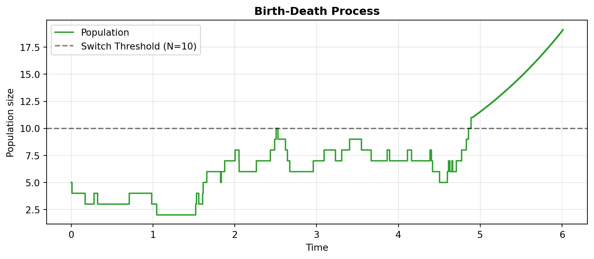
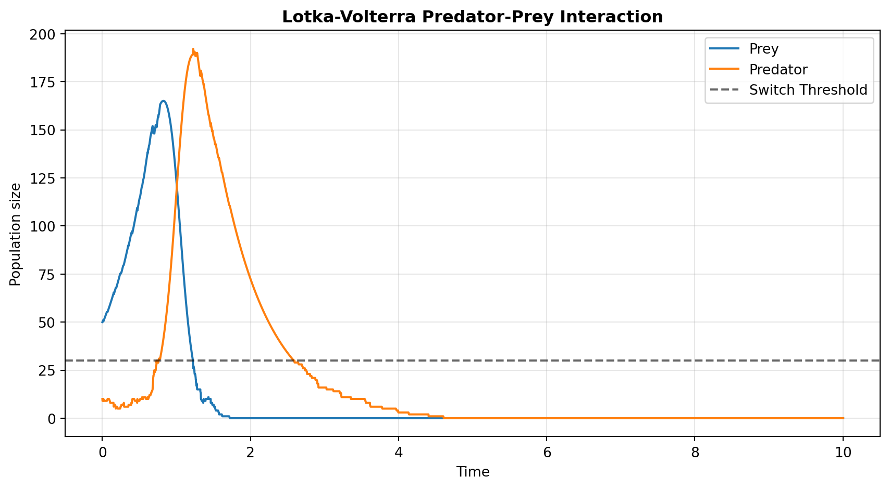
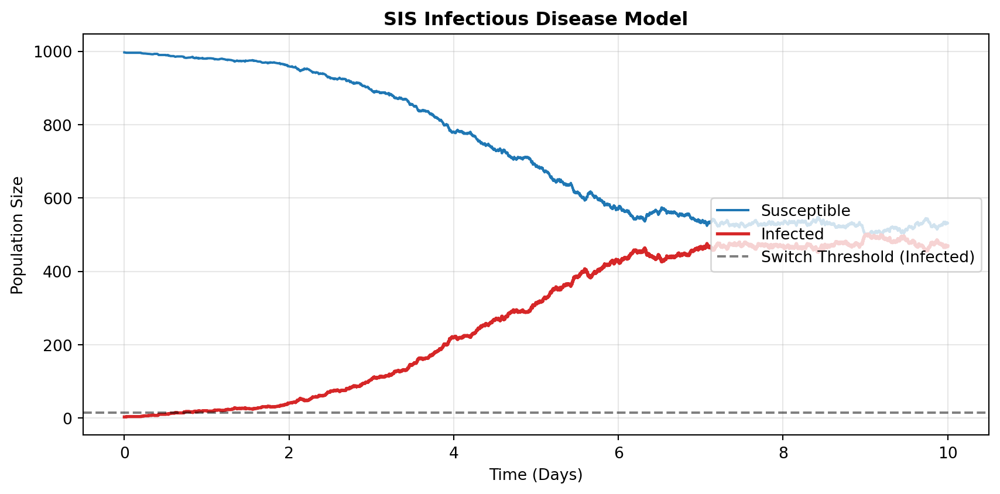

import pandas as pd
import random
import matplotlib.pyplot as plt
import jsf
random.seed(42)
# Initial populations: 5
x0_bd = [5]
# Rates: lambda=1.0, mu=0.5
birth_rate, death_rate = 1.0, 0.5
rates_bd = lambda x, t: [birth_rate * x[0], death_rate * x[0]]
# Stoichiometry
reactant_bd = [[1], [1]]
product_bd = [[2], [0]]
nu_bd = [[a - b for a, b in zip(p, r)] for p, r in zip(product_bd, reactant_bd)]
stoich_bd = {
"nu": nu_bd,
"DoDisc": [1],
"nuReactant": reactant_bd,
"nuProduct": product_bd
}
my_opts_bd = {
"EnforceDo": [0],
"dt": 0.01,
"SwitchingThreshold": [10]
}Jump-Switch-Flow (JSF) Demonstration
Python package usage demonstration
Overview
This document demonstrates the usage of the python jsf package as demonstrated in the official Jump-Switch-Flow Sphinx Documentation.
The JSF process dynamically captures stochasticity at low populations (via Gillespie SSA) and scales computing efficiency at high populations (via ODE mean-field flows).
1. Birth-Death Process (Single Compartment)
Before simulating complex multi-species boundaries, we demonstrate the JSF process on the most fundamental compartmental model: a population undergoing constant growth (\(\lambda\)) and death (\(\mu\)).
This tests the fundamental architecture of the jump-switch mechanism across a single stochastic threshold.
The mathematical formulation for this model is: \[ \frac{dN}{dt} = \lambda N - \mu N \]
Where:
- \(N\): Population size
- \(\lambda\): Birth rate
- \(\mu\): Death rate
Configuration
Simulation & Visualization
We simulate until \(t=6.0\) to watch the trace confidently cross the threshold dividing the discrete (stochastic jumps) and continuous (smooth ODE) regimes.
sim_bd = jsf.jsf(x0_bd, rates_bd, stoich_bd, 6.0, config=my_opts_bd, method="operator-splitting")
plt.figure(figsize=(9, 4))
plt.step(sim_bd[1], sim_bd[0][0], label="Population", color="#2ca02c", linewidth=1.5, where="post")
plt.axhline(y=my_opts_bd["SwitchingThreshold"][0], color="k", linestyle="--", alpha=0.5, label="Switch Threshold (N=10)")
plt.title("Birth-Death Process", fontweight="bold")
plt.xlabel("Time")
plt.ylabel("Population size")
plt.legend()
plt.grid(alpha=0.3)
plt.tight_layout()
plt.show()
2. Lotka-Volterra Predator-Prey Model
We construct the classic predator-prey system to demonstrate the framework’s ability to seamlessly bridge discrete and continuous regimes.
The mathematical formulation for this model is: \[ \frac{\mathrm{d} V_1}{\mathrm{d} t} = \alpha V_1 - \beta V_1 V_2 \] \[ \frac{\mathrm{d} V_2}{\mathrm{d} t} = \beta V_1 V_2 - \gamma V_2 \]
Where:
- \(V_1\): Prey population size
- \(V_2\): Predator population size
- \(\alpha\): Prey growth rate
- \(\beta\): Predation rate
- \(\gamma\): Predator death rate
1. Initialization
First, we set up our Python environment constraints exactly as defined in the official JSF docs.
import pandas as pd
import random
import matplotlib.pyplot as plt
import jsf
random.seed(42)
# Initial populations: 50 Prey, 10 Predators
x0 = [50, 10]
# System parameters
mA = 2.00
mB = 0.05
mC = 1.50
# Rate definitions
rates = lambda x, _: [mA * x[0],
mC * x[1],
mB * x[0] * x[1]]
# Stoichiometry arrays
reactant_matrix = [[1 , 0],
[0 , 1],
[1 , 1]]
product_matrix = [[2 , 0],
[0 , 0],
[0 , 2]]
t_max = 102. Configure JSF Properties
We construct the specific stoich and my_opts dictionaries required by the jsf underlying simulator. Note that SwitchingThreshold is set to 30 for both compartments to trigger the CTMC/ODE regime swap.
stoich = {
"nu": [ [a - b for a, b in zip(r1, r2)]
for r1, r2 in zip(product_matrix, reactant_matrix) ],
"DoDisc": [1, 1],
"nuReactant": reactant_matrix,
"nuProduct": product_matrix,
}
my_opts = {
"EnforceDo": [0, 0],
"dt": 0.01,
"SwitchingThreshold": [30, 30]
}3. Simulate and Visualize
We execute the target jsf.jsf operator splitting method and plot using standard matplotlib structures mapped natively against the 30-population switching threshold boundary.
sim = jsf.jsf(x0, rates, stoich, t_max, config=my_opts, method="operator-splitting")
plt.figure(figsize=(9, 5))
plt.plot(sim[1], sim[0][0], label="Prey", color="#1f77b4")
plt.plot(sim[1], sim[0][1], label="Predator", color="#ff7f0e")
plt.axhline(y=my_opts["SwitchingThreshold"][1], color="k", linestyle="--", alpha=0.6, label="Switch Threshold")
plt.title("Lotka-Volterra Predator-Prey Interaction", fontweight="bold")
plt.xlabel("Time")
plt.ylabel("Population size")
plt.legend()
plt.grid(alpha=0.3)
plt.tight_layout()
plt.show()
3. SIS Infectious Disease Model
The JSF documentation explicitly cites the SIS (Susceptible-Infected-Susceptible) model as its primary epidemiological example, defining it via an SBML file representation.
We mathematically translate their SBML structure into a native Python dictionary simulation to capture its stochastic extinction dynamics. This represents the most critical use case for JSF: disease modeling near elimination boundaries where standard ODEs falsely predict continuous fractional infections instead of true stochastic extinction.
The mathematical formulation for this model is: \[ \frac{dS}{dt} = -\beta SI + \gamma I \] \[ \frac{dI}{dt} = \beta SI - \gamma I \]
Where:
- \(S\): Susceptible population size
- \(I\): Infected population size
- \(\beta\): Transmission rate
- \(\gamma\): Recovery rate
Configuration & Simulation
import numpy as np
import random
# We use seed 1 here so the disease successfully escapes initial extinction
random.seed(1)
np.random.seed(1)
# Initial population: 997 Susceptible, 3 Infected
x0_sis = [997, 3]
# Disease rates from index.rst SBML example
beta_sis = 0.002
gamma_sis = 1.0
# Rate definition
rates_sis = lambda x, t: [
beta_sis * x[0] * x[1], # Infection
gamma_sis * x[1] # Recovery
]
# Reactants: S+I -> I+I, I -> S
reactant_sis = [[1, 1], [0, 1]]
product_sis = [[0, 2], [1, 0]]
nu_sis = [[a - b for a, b in zip(p, r)] for p, r in zip(product_sis, reactant_sis)]
stoich_sis = {
"nu": nu_sis,
"DoDisc": [0, 1], # We exclusively track 'Infected' state discretely
"nuReactant": reactant_sis,
"nuProduct": product_sis
}
opts_sis = {
"EnforceDo": [0, 0],
"dt": 0.05,
"SwitchingThreshold": [1000, 15] # Force stochastic for < 15 infected
}
# Run simulation
sim_sis = jsf.jsf(x0_sis, rates_sis, stoich_sis, 10.0, config=opts_sis, method="operator-splitting")
t_sis = np.array(sim_sis[1])
S_sis = np.array(sim_sis[0][0])
I_sis = np.array(sim_sis[0][1])
fig, ax = plt.subplots(figsize=(9, 4.5))
ax.plot(t_sis, S_sis, color="#1f77b4", label="Susceptible", linewidth=1.5)
ax.step(t_sis, I_sis, color="#d62728", label="Infected", linewidth=2.0, where="post")
ax.axhline(y=opts_sis["SwitchingThreshold"][1], color="k", linestyle="--", alpha=0.5, label="Switch Threshold (Infected)")
ax.set_title("SIS Infectious Disease Model", fontweight="bold")
ax.set_xlabel("Time (Days)")
ax.set_ylabel("Population Size")
ax.legend(loc="right")
ax.grid(alpha=0.3)
plt.tight_layout()
plt.show()
4. Bridging Python and R with the jsfR Package
The three simulations above call the Python jsf package directly. The companion jsfR R package wraps this same interface natively, so users never need to write Python themselves.
The code below replicates the SIS model from Section 3 using the jsfR::jsf_run() function, which returns a typed JSFSimResult S7 object with built-in print() and plot() methods.
#| eval: false # requires jsfR installed: devtools::load_all("jsfR")
library(jsfR)
rates_sis <- function(x, t) c(0.002 * x[[1]] * x[[2]], # Infection
1.0 * x[[2]]) # Recovery
stoich_sis <- list(
nu = list(c(-1L, 1L), c( 1L, -1L)),
DoDisc = c(0L, 1L),
nuReactant = list(c(1L, 1L), c(0L, 1L)),
nuProduct = list(c(0L, 2L), c(1L, 0L))
)
result <- jsf_run(
x0 = c(997L, 3L),
rates = rates_sis,
stoich = stoich_sis,
t_max = 10.0,
switching_threshold = c(1000L, 15L),
enforce_do = c(0L, 0L),
seed = 1L,
compartment_names = c("Susceptible", "Infected")
)
# S7 print method — per-compartment diagnostic summary
print(result)
# S7 plot method — ggplot2 time-series
plot(result)The JSFSimResult object carries the full simulation output alongside metadata (method, threshold, seed), making results self-describing and reproducible. This R-native interface is the core deliverable of the Medium test.
Conclusion
The Jump-Switch-Flow algorithm excels by intelligently balancing stochastic accuracy with deterministic computational speed. By setting specific SwitchingThreshold boundaries:
- Birth-Death: Demonstrates the fundamental ability of the algorithm to switch a single compartment’s simulation regime based on a single threshold.
- Lotka-Volterra: Showcases JSF preserving crucial stochastic extinctions in multi-compartmental systems that mean-field ODEs would otherwise force into an impossible, infinite limit-cycle.
- SIS Disease Dynamics: Utilizes JSF’s
DoDiscvector to exclusively track the crucial “Infected” compartment discretely at low numbers, accurately capturing stochastic disease elimination without breaking the performance of macroscopic Susceptible flows. jsfRR Package: Wraps the Python interface in a typed S7 object system, giving R users a native, reproducible, self-describing API without writing a single line of Python.